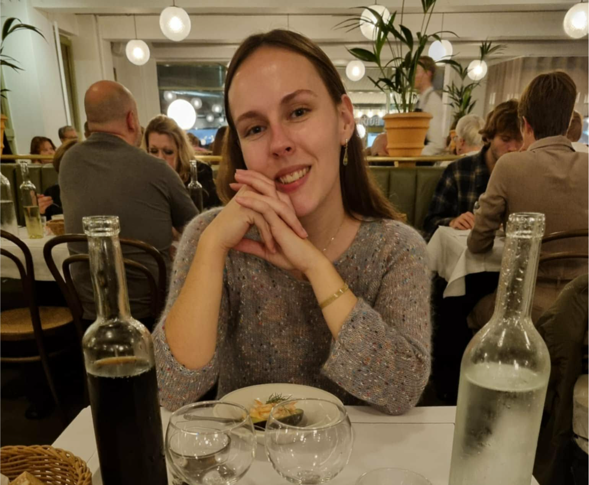
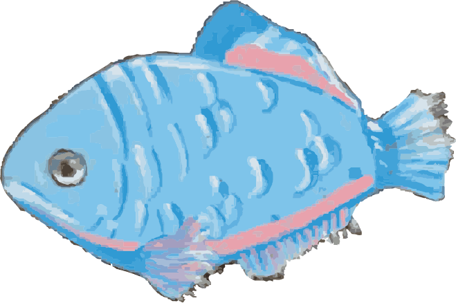
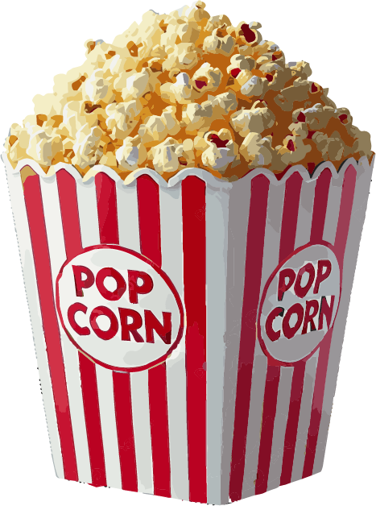
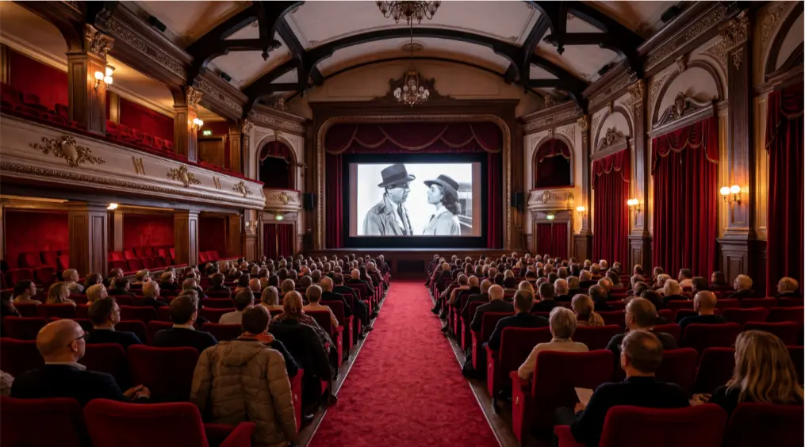
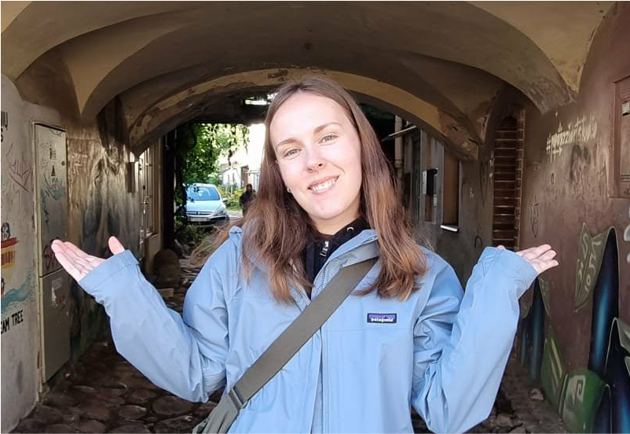
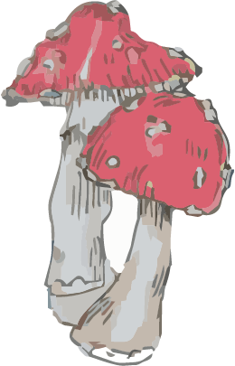

Hvem er jeg?
Hej, jeg hedder Julie, er 25 år og studerer Multimediedesign på 1. semester.
I min fritid bruger jeg meget tid på kreative projekter som maling, tegning, lerskulpturer og animation. Jeg nyder at udforske nye idéer og udtryksformer,
og jeg finder stor inspiration i film, kunst og design.
På denne portfolio kan du følge min udvikling som multimediedesigner og se eksempler på de projekter, jeg har arbejdet med.
Mit mål er løbende at udvikle mine kompetencer
inden for design og frontend-udvikling og skabe digitale løsninger, der både er funktionelle, kreative og brugervenlige.

Uddannelse- og erhvervserfaring
De sidste 5 år har jeg arbejdet i biografbranchen med bl.a. teknik og film.
Jeg har stået for kontakten med film distributører, Dansk Reklame Film, BioSpil og samtidig lavet alt det arbejde som gæsterne ser i salen, både før, under og efter film start.
Erfaringen har givet mig en stærk forståelse for visuel
formidling, samarbejde og det tekniske arbejde bag gode oplevelser.
Min interesse for film har også været med til at styrke min passion for visuel historiefortælling og kreativt arbejde.



Hvad har jeg fået ud af 1. semester?
Jeg har altid været en kreativ person og interesseret mig for, hvordan design, teknologi og visuel kommunikation kan kombineres for at skabe gode digitale oplevelser.
På uddannelsen har jeg særligt fundet interesse i
frontend-udvikling og animation, hvor jeg kan kombinere kreativitet med tekniske færdigheder for at udvikle engagerende og brugervenlige løsninger.
Gennem mine projekter arbejder jeg med værktøjer som Figma, Visual Studio Code,
Photoshop og Illustrator, hvor jeg udvikler både design og funktionalitet.
Jeg motiveres af at lære nye teknikker og udfordre mig selv kreativt, samtidig med at jeg skaber løsninger med fokus på brugeroplevelse og æstetik.
